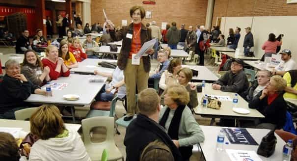

< < < Back
How The Iowa Presidential Caucuses Work – Return Of Kings
Every election cycle, the year-long circus that is the presidential election begins with the Iowa caucuses. Candidates descend on the state like buzzards to a garbage truck, stumping at rallies and flooding the TV and radio stations with ads, with press prostitutes in tow ready to report every gaffe they make. I’ve been criss-crossing the state for over a week now reporting on campaigns both Democratic and Republican, but one question still looms large: how do the caucuses themselves work?
Most states use a simple primary election for the presidential race: you walk in, yank the lever for your preferred candidate, and walk out. Iowa’s caucus structure is more complex, to the point where campaign volunteers have to explain the rules to potential voters. Since the tone of the election will be set by how Iowans vote this Monday, it behooved me to learn how the caucuses worked and how they affect the state’s political culture.
To answer my questions, I turned to Joseph Dobrian, an award-winning writer and novelist based in Iowa City. Dobrian writes on finance, management, real estate and other related topics for clients including the Wall Street Journal, PricewaterhouseCoopers, American Express and many others, and he’s the author of the novels Ambitions and Willie Wilden. Tonight, he will also be serving as a Republican caucus leader for his local precinct.
After meeting Dobrian for lunch on Tuesday, I asked him a few questions about the Iowa caucuses and how they worked. Here’s what he had to say.
How The Iowa Caucuses Work

Matt Forney: Could you give an overview of how the Republican and Democratic caucuses in Iowa work and what differentiates them from the primary elections most states use?
Joseph Dobrian: The Republican caucus is pretty much the same as a primary election, except that you have to physically attend your caucus to participate. It’s simply a head count (voting by secret paper ballot), which the caucus chairman then reports to the county Republican headquarters. It’s basically a “beauty contest,” with the vote having little influence on how many delegates to the national convention each candidate ultimately wins.
The Democratic system is much more complicated and I’m not an expert on the rules, but each precinct sends a certain number of delegates to the county convention based on how much support each candidate has. A candidate must have at least 15 percent support in a precinct to be considered “viable” and thus qualified to send at least one delegate to the county convention. Therefore, there’s a lot of shuffling, bargaining, and re-arranging at the caucus, as, for example, the supporters of several minor candidates who wouldn’t be viable on their own might band together to send an “uncommitted” delegate to county.
MF: What effect (if any) do you believe that the caucus procedure has on Iowan politics/the presidential race, compared to primaries? Do you believe this effect is beneficial or detrimental?
JD: It has relatively little effect except to weed out the weakest candidates. I wish, though, that more states would use the caucus system rather than the primary system, since a caucus is less likely to attract voters who aren’t informed, and aren’t committed to their party.
How Will The Iowa Caucuses Affect The Presidential Race?

MF: As Donald Trump pointed out, Iowa hasn’t picked a lot of winners. In all the elections going back to 1996 (excluding 2004, in which incumbent George W. Bush ran unopposed), only two Republican candidates—Bob Dole in 1996 and George W. Bush in 2000—won the Iowa caucuses and then went on to win the nomination. Democrats have a better record: every candidate who has won the Iowa caucuses since 1996 has also won the nomination. Do you have any theories on why Iowans tend to buck the national trend when it comes to the presidential nomination (at least when it comes to the GOP)? Does the way the caucuses work play a role in this?
JD: I wouldn’t say Iowans buck the national trend. Our results are usually predictable enough, considering our demographics. The evangelical vote is much bigger here than in most other states, for example. The RINO type, like Bush or Christie, will never do well here, whereas the national convention often does nominate a RINO. The caucuses do tend to attract more serious, committed people, which means more conservatives and evangelicals. The fence-sitters don’t go to caucuses in large numbers—but they do vote in primaries, which is why I disapprove of primaries.
MF: Thank you for your time, Joseph.
With the caucuses tonight, all eyes will be on Iowa as the presidential election unfolds. Understanding how the caucuses work is key to predicting their results. Return of Kings will continue to provide reporting and analysis on the Iowa caucuses throughout the night.
Read More: Donald Trump’s Presidential Campaign Is The Biggest Political Uprising In Decades